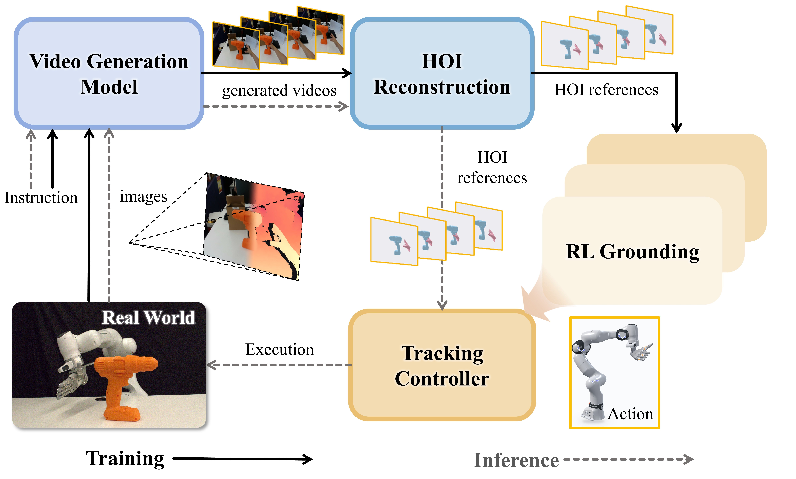
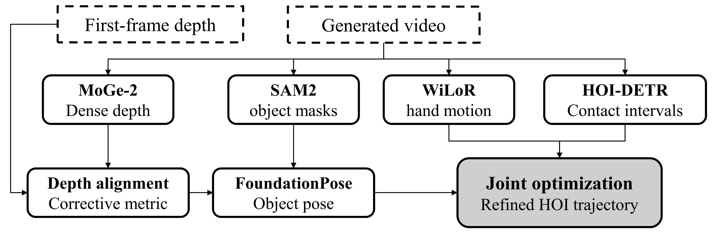
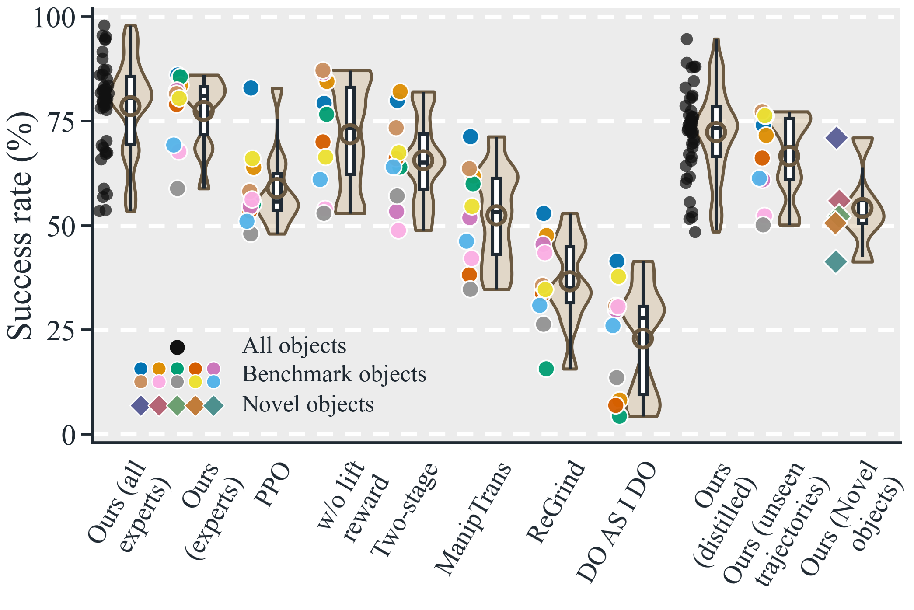

GALATEA
GALATEA does two things:
Generated hand–object interaction videos provide a controllable way to propose manipulation motions. GALATEA combines generated videos with simulation-based HOI grounding: generated videos provide diverse motion references for learning a multi-object, multi-trajectory HOI tracker, and at deployment, video models produce motion plans executed by the learned tracker. HOI reconstruction with minimal manual intervention yields about 2,000 usable references from 2,500 generated clips; more than 1,500 trajectories are grounded in simulation. In closed-loop real-world experiments, the distilled controller performs functional grasps, non-prehensile manipulation, and post-grasp object-pose tracking.
Condition a video model on a real first-frame image and language instruction. Recover metric hand–object trajectories with stereo depth, object masks, hand tracking, and joint optimization.
Augment references while preserving contact, then train a reinforcement-learning (RL) tracking policy with contact-aware rewards, SAPG, and domain randomization.
Distill category experts with behavior cloning and DAgger into a single policy that transfers across objects and unseen trajectories.


These examples showcase a subset of the objects and interactions in our dataset. Objects shown: airplane, large bowl, compass, cup, flashlight, god hammer, ball-peen hammer, hanger, jar, knife, lamp, Rubik’s cube, measuring tape, milk can, mouse, camera, pan, pot, power drill, skateboard, turtle, watering can, and pliers.

Simulation success rates. Black circles, colored circles, and diamonds represent 42 training objects, 10 benchmark objects, and five novel objects; violins show distributions, boxes show interquartile ranges, and hollow circles show means. GALATEA experts lead the benchmark at 77.4% mean success, while the distilled controller reaches 54.2% mean success on novel objects without retraining. Higher is better.
It turns generated videos into a dexterous robot controller in two parts. First, it reconstructs metric 3D hand–object trajectories (a MANO hand and a 6-DoF object pose per frame) from videos that an image-to-video model (Seedance 2.0) generates from a real first-frame image and a language instruction. Second, it uses those trajectories to train one general hand–object tracking policy with reinforcement learning (RL): a single policy for many objects and trajectories, rather than one policy per trajectory. At deployment, a new generated video serves as the motion plan, and the controller executes it closed-loop on a real robot hand.
In a blind ranking of 120 generated clips by four raters, it was ranked first in 417 of 480 judgments (87%) against VideoManip, DO AS I DO, and EgoInfinity. On H2O and HO-Cap clips with 3D ground truth, it has the best average rank (1.67) and the lowest object ADD-S (4.82 cm and 3.88 cm). Of 2,500 generated clips, 83% passed the quality check.
Category experts are asymmetric actor–critic policies trained with reinforcement learning (SAPG) in Isaac Gym, using contact- and lift-aware rewards, reference augmentation, and domain randomization. They reach 78.6% macro-mean success on 42 training objects and achieve the highest mean on a 10-object benchmark (77.4%), compared with PPO, two-stage training, ManipTrans, ReGrind, and DO AS I DO; their tracking errors are 10.2 mm in object position, 17.4° in object rotation, and 36.2 mm in hand keypoints. Policy distillation (behavior cloning followed by DAgger) merges the experts into one unified policy, which reaches 66.6% on 300 unseen trajectories and 54.2% on five novel objects in simulation, and succeeds in 27 of 40 real-world trials on unseen video plans (jar and mug tasks).
Some video-based methods map generated videos to robot actions with inverse-dynamics models or video-conditioned policies, which typically need embodiment-specific robot demonstrations. LVP retargets generated wrist and hand kinematics but does not track object motion or contact during open-loop execution. Dex4D conditions a closed-loop policy on object-centric 3D point tracks, which leaves the interaction strategy, such as a functional grasp, under-specified. GALATEA reconstructs and physically grounds both finger-level and object trajectories. On the control side, most prior retargeting work learns from motion capture or from one or a few human videos; GALATEA learns one RL controller from a large, noisy corpus of more than 1,500 generated-video references.
A Franka Research 3 arm with a 22-DoF Sharpa Wave hand, simulated with PhysX in Isaac Gym. In the real world, an Intel RealSense D455 provides object poses through FoundationPose. The controller is learned in simulation with RL and policy distillation, then deployed sim-to-real on the real robot.
Yes. The GitHub repository releases the reconstruction code (recon/) with an example generated video, and the RL tracking code (rl/) with pretrained checkpoints and example datasets.
@article{wu2026galatea,
title={Grounding Generated Video Plans in Simulation Towards Versatile Dexterous Controllers},
author={Wu, Tianyue and An, Boyuan and Zhao, Shuqi and Guo, Heyu and Xing, Wanli and Ma, Yi and Zhang, Kaifeng and Wu, Ruihai and Tomizuka, Masayoshi},
journal={arXiv preprint arXiv:2609.10050},
year={2026}
}